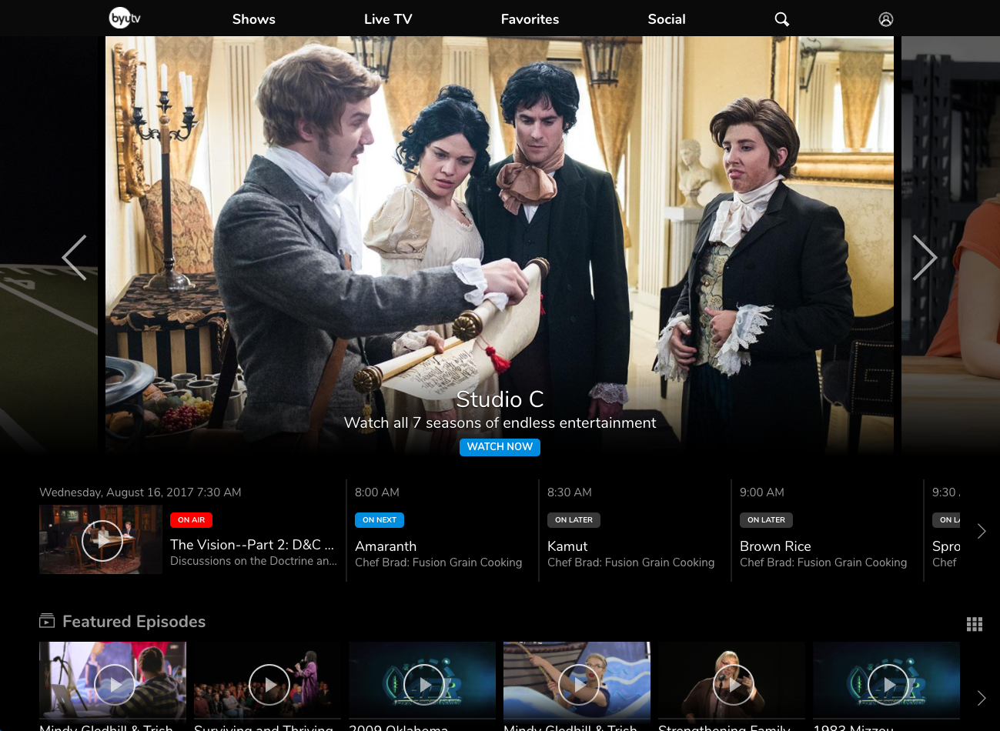

Data augmentation research for the Air Force Research Laboratory Sensors Directorate using cycle-consistent adversal networks (CycleGANs). More information
coming later after public release.
Technologies: TensorFlow, Python, Supercomputing
Perception, Control, and Cognition Laboratory - BYU
Inspired by recent successes in using deep reinforcement learning to beat 2D Atari games, we wanted to explore using deep learning in realistic 3D environments. Subsequently, I designed and built a photo-realistic world simulator in the gaming environment Unreal Engine that we could use to simulate agents in the real world.
With the simulator, we have been able to study deep reinforcement learning algorithms that can extract information from simulated sensors and transform it into low-level actions to achieve goals in complex environments. The simulator architecture and the sensors I built are being used in a variety of research projects in the lab; for example, we are now using deep reinforcement learning in our simulator to teach drones to quickly navigate high-risk environments like forests.
I had the incredible opportunity to intern for LGS Innovations in Westminster, Colorado during summer 2016. I worked on the Base Station Router , a flagship product for LGS Innovations. I designed and built a new multi-threaded logger process for the BSR. This project improved logging for the BSR and made it much easier for developers to debug products that were deployed by the government in remote areas.
My team designed it to be highly customizable so that it could be used for various customers and builds of the BSR. Our process enables dynamic manipulation of log filters and encrypts the logs. It uses a GUI to help customers and developers easily interact with it. Our project was integrated into the main codebase during my last week; many employees commented that they had never seen an intern project be integrated so quickly!
The project gave me more experience working with a massive codebase in C++. It also gave me the opportunity to work with many different, highly-skilled engineers across the company who specialize in different areas.
Technologies: C++, Embedded Programming
Front End Development - BYU Broadcasting

At BYU Broadcasting, I worked on a team of 7 full-time employees and 10 students that created websites and apps for platforms such as Android, iOS, Xbox, Roku, Windows Phone, Amazon FireTV, Chromecast, etc. My work focused on integrating our back-end services into the user interfaces that make up our websites and applications. In addition to programming in languages such as JavaScript, CSS, HTML, and C#, I learned to use many libraries, frameworks, and plugins such as jQuery, Gulp, NodeJS, Handlebars, Polymer, Bootstrap, etc. The main websites I worked on included byutv.org , byuradio.org, and byutvi.org. Our team built the platform, CMS, and front-end of these websites using a variety of classic as well as experimental technologies.
Every two weeks, we each had the opportunity to use a planning week to explore new technologies and areas of interest. We also gave and received trainings on the new technologies that we were learning. Working at BYU Broadcasting helped me to do interesting projects like implementing a custom twitter feed, building a server, and even writing my own app. I had the incredible opportunity to write production-level code in a professional environment using exciting new technologies.
Technologies: JavaScript, HTML, CSS
Senior Capstone - Qualtrics
In collaboration with Qualtrics and as part of a BYU senior capstone project, 3 students and I designed machine learning and natural language processing tools that automatically identified actionable responses in free-response surveys. It was able to filter out over 85% of non-useful responses (as judged by human labeling) and rank responses on the degree of usefulness. This makes it easier for organizations to quickly find and use the most useful responses from many thousands of survey responses.
Technologies: TensorFlow, Apache Spark, Python
Spin Tac Toe
I have enjoyed working on personal projects throughout my undergraduate degree. While in my first CS class, I started working on my first app, “Spin Tac Toe.” Building its rudimentary AI with no AI background as a freshmen inspired me to pursue more opportunities in AI going forward. It motivated me find a job in the Perception, Control, and Cognition Laboratory and take coursework in Artificial Intelligence and Machine Learning. Check out the app I built as a freshman here.
Technologies: JavaScript, HTML, CSS
Ticket To Ride App
In a software design class, I was appointed group lead with 4 other students and we developed a Ticket To Ride App. Using classic design patterns (Adapter, Facade, Proxy, Command, Observer, etc.), we built everything from the database and backend server to the frontend UI.
Technologies: Java, SQL, Android
Utility Tracker Prototype
I developed this prototype of a smart home utility tracker with a group of 3 other students. We followed an iterative design process evolving from wireframes and many user tests. Our group was voted the best prototype in the class.
Technologies: JavaScript, HTML, CSS
Reversi AI
Some of my favorite projects have involved AI and machine learning, from potential fields and part of speech tagging to building neural networks and decision trees from scratch.
In this one, I wrote an AI for the game Reversi (aka Othello) which almost always beat me.
Technologies: Python
Records Indexer
This project was a genological records indexer that allows users to digitize old records. It was one of my first significant projects that included everything from the backend to the front.
Technologies: Java
High Performance Computing - Parallelization of Minimax with OpenMP
In CS 759, we learned all about ways to improve performance, from effective cache usage to parallelization with multithreading, GPU acceleration, or distributed computing. As part of a simple final project, I evaluated the effectiveness of paralleling the minimax algorithm in the game Othello using OpenMP. I showed that simple optimizations could be an effective means of increasing win percentage without any changes to the underlying AI logic.